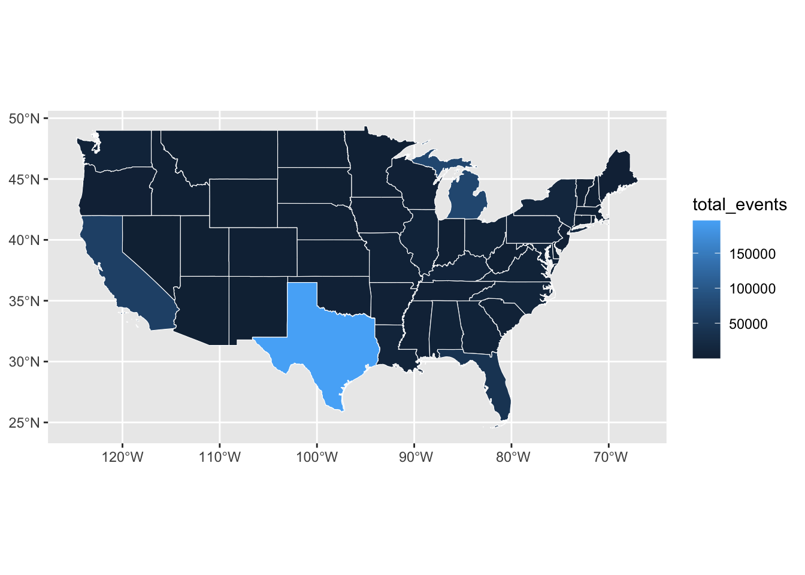

library(tidyverse)
library(janitor)
library(tigris)
library(sf)Power Analysis
Initial Questions
- What is the most common cause of power outages?
- What cause leads to the longest power outages?
- What state resolves issues the quickest? Longest?
- What state has the most outages? Least? -> Choropleth map, can do Texas and counties too
Setup
Import multiple files
power_files_list <- list.files(
"data-processed-power",
full.names = T
)
power_files_list [1] "data-processed-power/Alabama.csv"
[2] "data-processed-power/Arizona.csv"
[3] "data-processed-power/Arkansas.csv"
[4] "data-processed-power/California.csv"
[5] "data-processed-power/Colorado.csv"
[6] "data-processed-power/Connecticut.csv"
[7] "data-processed-power/Delaware.csv"
[8] "data-processed-power/Florida.csv"
[9] "data-processed-power/Georgia.csv"
[10] "data-processed-power/Idaho.csv"
[11] "data-processed-power/Illinois.csv"
[12] "data-processed-power/Indiana.csv"
[13] "data-processed-power/Iowa.csv"
[14] "data-processed-power/Kansas.csv"
[15] "data-processed-power/Kentucky.csv"
[16] "data-processed-power/Louisiana.csv"
[17] "data-processed-power/Maine.csv"
[18] "data-processed-power/Maryland.csv"
[19] "data-processed-power/Massachusetts.csv"
[20] "data-processed-power/Michigan.csv"
[21] "data-processed-power/Minnesota.csv"
[22] "data-processed-power/Mississippi.csv"
[23] "data-processed-power/Missouri.csv"
[24] "data-processed-power/Montana.csv"
[25] "data-processed-power/Nebraska.csv"
[26] "data-processed-power/Nevada.csv"
[27] "data-processed-power/New Hampshire.csv"
[28] "data-processed-power/New Jersey.csv"
[29] "data-processed-power/New Mexico.csv"
[30] "data-processed-power/New York.csv"
[31] "data-processed-power/North Carolina.csv"
[32] "data-processed-power/North Dakota.csv"
[33] "data-processed-power/Ohio.csv"
[34] "data-processed-power/Oklahoma.csv"
[35] "data-processed-power/Oregon.csv"
[36] "data-processed-power/Pennsylvania.csv"
[37] "data-processed-power/Rhode Island.csv"
[38] "data-processed-power/South Carolina.csv"
[39] "data-processed-power/South Dakota.csv"
[40] "data-processed-power/Tennessee.csv"
[41] "data-processed-power/Texas.csv"
[42] "data-processed-power/Utah.csv"
[43] "data-processed-power/Vermont.csv"
[44] "data-processed-power/Virginia.csv"
[45] "data-processed-power/Washington.csv"
[46] "data-processed-power/West Virginia.csv"
[47] "data-processed-power/Wisconsin.csv"
[48] "data-processed-power/Wyoming.csv" power_all <- map(
power_files_list,
read_csv
) |>
list_rbind() |>
clean_names()
power_all |> glimpse()Rows: 526,165
Columns: 13
$ state_event <chr> "Alabama", "Alabama", "Alabama", "Alabama", "Alab…
$ datetime_event_began <dttm> 2015-01-07 17:00:00, 2015-02-16 21:00:00, 2015-0…
$ datetime_restoration <dttm> 2015-01-08 08:35:00, 2015-02-18 14:00:00, 2015-0…
$ event_type <chr> "Severe Weather - Winter", "Severe Weather - Wint…
$ fips <dbl> 1039, 1003, 1085, 1003, 1003, 1085, 1001, 1021, 1…
$ state <chr> "Alabama", "Alabama", "Alabama", "Alabama", "Alab…
$ county <chr> "Covington", "Baldwin", "Lowndes", "Baldwin", "Ba…
$ start_time <dttm> 2015-01-08 05:00:00, 2015-02-19 22:15:00, 2015-0…
$ duration <dbl> 2.00, 1.00, 1.25, 1.00, 0.75, 1.25, 2.25, 2.50, 1…
$ end_time <dttm> 2015-01-08 07:00:00, 2015-02-19 23:15:00, 2015-0…
$ min_customers <dbl> 723, 368, 405, 368, 312, 405, 381, 289, 203, 352,…
$ max_customers <dbl> 723, 567, 414, 567, 315, 414, 1607, 540, 224, 352…
$ mean_customers <dbl> 723.0000, 417.7500, 410.4000, 417.7500, 313.3333,…Longest Outage Events
power_all |> arrange(duration |> desc()) # A tibble: 526,165 × 13
state_event datetime_event_began datetime_restoration event_type fips state
<chr> <dttm> <dttm> <chr> <dbl> <chr>
1 Texas 2017-08-26 06:26:00 2017-09-08 00:00:00 Severe Wea… 48245 Texas
2 Texas 2017-08-27 05:10:00 2017-09-08 00:00:00 Severe Wea… 48245 Texas
3 Texas 2017-08-26 06:26:00 2017-09-08 00:00:00 Severe Wea… 48361 Texas
4 Texas 2017-08-27 05:10:00 2017-09-08 00:00:00 Severe Wea… 48361 Texas
5 Texas 2017-08-26 06:26:00 2017-09-08 00:00:00 Severe Wea… 48199 Texas
6 Texas 2017-08-27 05:10:00 2017-09-08 00:00:00 Severe Wea… 48199 Texas
7 Louisiana 2020-08-27 05:00:00 2020-09-03 12:00:00 Severe Wea… 22073 Loui…
8 Texas 2017-08-25 18:30:00 2017-09-05 17:00:00 Severe Wea… 48291 Texas
9 Texas 2017-08-26 06:26:00 2017-09-08 00:00:00 Severe Wea… 48291 Texas
10 Texas 2017-08-27 05:10:00 2017-09-08 00:00:00 Severe Wea… 48291 Texas
# ℹ 526,155 more rows
# ℹ 7 more variables: county <chr>, start_time <dttm>, duration <dbl>,
# end_time <dttm>, min_customers <dbl>, max_customers <dbl>,
# mean_customers <dbl>What is the most common cause of power outages?
power_all |> group_by (event_type) |>
summarize(total_events = n()) |>
arrange(total_events |> desc())# A tibble: 71 × 2
event_type total_events
<chr> <int>
1 Severe Weather 390099
2 System Operations 33086
3 Vandalism 23002
4 Suspicious Activity 12763
5 Transmission Interruption 11580
6 Severe Weather/Transmission Interruption 9428
7 - Weather or natural disaster 8534
8 Fuel Supply Deficiency 7009
9 Severe Weather/Distribution Interruption 4079
10 Cyber Event 3027
# ℹ 61 more rowsNeed to create a new column for event_type categories that are similar
Creating new column for event_type (categories that are similar)
power_cat <- power_all |>
mutate(event_category = case_when(
str_detect(event_type, "Weather") == TRUE ~ "Weather",
str_detect(event_type, "System Operations") == TRUE ~ "System Operations",
str_detect(event_type, "Suspicious Activity") == TRUE ~ "Suspiciour Activity",
str_detect(event_type, "Transmission") == TRUE ~ "Equipment Issue",
str_detect(event_type, "Fuel") == TRUE ~ "Fuel Supply Issue",
str_detect(event_type, "Cyber") == TRUE ~ "Cyber Issue",
str_detect(event_type, "Physical") == TRUE ~ "Potential or Actual Physical Interference",
str_detect(event_type, "Vandalism") == TRUE ~ "Potential or Actual Physical Interference",
str_detect(event_type, "Generation") == TRUE ~ "Generation Inedequacy",
str_detect(event_type, "Sabotage") == TRUE ~ "Potential or Actual Physical Interference",
str_detect(event_type, "Natural Disaster") == TRUE ~ "Natural Disaster",
str_detect(event_type, "Suspicious") == TRUE ~ "Potential or Actual Physical Interference",
str_detect(event_type, "Distribution Interruption") == TRUE ~ "Distribution Interruption",
str_detect(event_type, "Islanding") == TRUE ~ "Islanding",
str_detect(event_type, "Theft") == TRUE ~ "Theft",
str_detect(event_type, "Public Appeal") == TRUE ~ "Public Appeal",
str_detect(event_type, "Failure at high voltage substation or switchyard") == TRUE ~ "Failure at high voltage substation or switchyard",
str_detect(event_type, "physical") == TRUE ~ "Potential or Actual Physical Interference",
str_detect(event_type, "Unknown") == TRUE ~ "Unknown", #second to last
str_detect(event_type, "Other") == TRUE ~ "Unknown" #make this last, so something-other is not affected
))power_cat |> group_by (event_category) |>
summarize(total_events = n()) |>
arrange(total_events |> desc())# A tibble: 15 × 2
event_category total_events
<chr> <int>
1 Weather 418499
2 System Operations 33086
3 Potential or Actual Physical Interference 32730
4 Equipment Issue 13037
5 Suspiciour Activity 12763
6 Fuel Supply Issue 7278
7 Cyber Issue 3252
8 Unknown 1909
9 Generation Inedequacy 1288
10 Natural Disaster 1052
11 Distribution Interruption 567
12 Failure at high voltage substation or switchyard 307
13 Theft 204
14 Islanding 145
15 Public Appeal 48What cause leads to the longest power outages?
power_cat |> group_by (event_category) |>
summarize(avg_outage_length = mean(duration), total_occurences = n()) |>
arrange(avg_outage_length |> desc(), total_occurences)# A tibble: 15 × 3
event_category avg_outage_length total_occurences
<chr> <dbl> <int>
1 Weather 6.99 418499
2 Fuel Supply Issue 5.05 7278
3 Natural Disaster 3.80 1052
4 Islanding 3.16 145
5 Distribution Interruption 3.14 567
6 System Operations 2.92 33086
7 Potential or Actual Physical Interference 2.80 32730
8 Cyber Issue 2.62 3252
9 Theft 2.58 204
10 Equipment Issue 2.56 13037
11 Generation Inedequacy 2.49 1288
12 Suspiciour Activity 2.32 12763
13 Unknown 2.26 1909
14 Failure at high voltage substation or swi… 2.02 307
15 Public Appeal 1.98 48What state resolves issues the quickest? slowest?
power_cat |> group_by (state_event) |>
summarize(avg_event_length = mean(duration), total_occurences = n()) |>
arrange(avg_event_length)# A tibble: 48 × 3
state_event avg_event_length total_occurences
<chr> <dbl> <int>
1 Maryland 0.827 6976
2 Wyoming 1.10 18
3 Nevada 2.05 483
4 New Mexico 2.06 258
5 Arizona 2.15 274
6 Utah 2.21 294
7 Nebraska 2.37 870
8 Idaho 2.38 645
9 Montana 3.40 84
10 Colorado 3.52 771
# ℹ 38 more rowspower_cat |> group_by (state_event) |>
summarize(avg_event_length = mean(duration), total_occurences = n()) |>
arrange(avg_event_length |> desc())# A tibble: 48 × 3
state_event avg_event_length total_occurences
<chr> <dbl> <int>
1 Kentucky 14.9 10689
2 Oregon 10.7 1935
3 Michigan 10.4 72764
4 West Virginia 10.2 1548
5 Alabama 9.67 6822
6 Rhode Island 9.21 410
7 Oklahoma 9.12 3637
8 New Jersey 7.78 2108
9 New Hampshire 7.07 1072
10 North Carolina 6.81 11470
# ℹ 38 more rowsWhat state has the most outages? Least?
power_cat |> group_by (state_event) |>
summarize(total_outages = n()) |>
arrange(total_outages |> desc())# A tibble: 48 × 2
state_event total_outages
<chr> <int>
1 Texas 196347
2 Michigan 72764
3 California 61499
4 Florida 39338
5 New York 13222
6 North Carolina 11470
7 Pennsylvania 10766
8 Kentucky 10689
9 Louisiana 9326
10 Washington 7838
# ℹ 38 more rowspower_cat |> group_by (state_event) |>
summarize(total_outages = n()) |>
arrange(total_outages)# A tibble: 48 × 2
state_event total_outages
<chr> <int>
1 Wyoming 18
2 Delaware 74
3 Montana 84
4 South Dakota 123
5 New Mexico 258
6 Arizona 274
7 Utah 294
8 Rhode Island 410
9 Nevada 483
10 Idaho 645
# ℹ 38 more rowsChoropleth graph
states <- states(cb = TRUE, class = "sf") # what does cb mean?Retrieving data for the year 2021
|
| | 0%
|
|= | 1%
|
|= | 2%
|
|== | 2%
|
|== | 3%
|
|=== | 4%
|
|=== | 5%
|
|==== | 5%
|
|==== | 6%
|
|===== | 6%
|
|===== | 7%
|
|====== | 8%
|
|====== | 9%
|
|======= | 9%
|
|======= | 10%
|
|======== | 11%
|
|======== | 12%
|
|========= | 12%
|
|========= | 13%
|
|========== | 14%
|
|========== | 15%
|
|=========== | 15%
|
|=========== | 16%
|
|============ | 17%
|
|============ | 18%
|
|============= | 18%
|
|============= | 19%
|
|============== | 20%
|
|============== | 21%
|
|=============== | 21%
|
|=============== | 22%
|
|================ | 23%
|
|================= | 24%
|
|================= | 25%
|
|================== | 25%
|
|================== | 26%
|
|=================== | 27%
|
|=================== | 28%
|
|==================== | 28%
|
|==================== | 29%
|
|===================== | 29%
|
|===================== | 30%
|
|====================== | 31%
|
|====================== | 32%
|
|======================= | 32%
|
|======================= | 33%
|
|======================== | 34%
|
|======================== | 35%
|
|========================= | 35%
|
|========================= | 36%
|
|========================== | 37%
|
|========================== | 38%
|
|=========================== | 38%
|
|=========================== | 39%
|
|============================ | 40%
|
|============================= | 41%
|
|============================= | 42%
|
|============================== | 42%
|
|============================== | 43%
|
|=============================== | 44%
|
|=============================== | 45%
|
|================================ | 45%
|
|================================ | 46%
|
|================================= | 47%
|
|================================= | 48%
|
|================================== | 48%
|
|================================== | 49%
|
|=================================== | 50%
|
|=================================== | 51%
|
|==================================== | 51%
|
|==================================== | 52%
|
|===================================== | 53%
|
|====================================== | 54%
|
|====================================== | 55%
|
|======================================= | 56%
|
|======================================== | 56%
|
|======================================== | 57%
|
|========================================= | 58%
|
|========================================= | 59%
|
|========================================== | 59%
|
|========================================== | 60%
|
|=========================================== | 61%
|
|=========================================== | 62%
|
|============================================ | 62%
|
|============================================ | 63%
|
|============================================= | 64%
|
|============================================= | 65%
|
|============================================== | 65%
|
|============================================== | 66%
|
|=============================================== | 67%
|
|=============================================== | 68%
|
|================================================ | 68%
|
|================================================ | 69%
|
|================================================= | 69%
|
|================================================= | 70%
|
|================================================== | 71%
|
|================================================== | 72%
|
|=================================================== | 72%
|
|=================================================== | 73%
|
|==================================================== | 74%
|
|==================================================== | 75%
|
|===================================================== | 75%
|
|===================================================== | 76%
|
|====================================================== | 77%
|
|====================================================== | 78%
|
|======================================================= | 78%
|
|======================================================= | 79%
|
|======================================================== | 80%
|
|======================================================== | 81%
|
|========================================================= | 81%
|
|========================================================= | 82%
|
|========================================================== | 83%
|
|========================================================== | 84%
|
|=========================================================== | 84%
|
|=========================================================== | 85%
|
|============================================================ | 85%
|
|============================================================ | 86%
|
|============================================================= | 87%
|
|============================================================== | 88%
|
|============================================================== | 89%
|
|=============================================================== | 89%
|
|=============================================================== | 90%
|
|================================================================ | 91%
|
|================================================================ | 92%
|
|================================================================= | 92%
|
|================================================================= | 93%
|
|================================================================== | 94%
|
|================================================================== | 95%
|
|=================================================================== | 95%
|
|=================================================================== | 96%
|
|==================================================================== | 97%
|
|==================================================================== | 98%
|
|===================================================================== | 98%
|
|===================================================================== | 99%
|
|======================================================================| 99%
|
|======================================================================| 100%power_states <- power_cat |> group_by(state_event) |>
summarize(total_events = n())
power_states# A tibble: 48 × 2
state_event total_events
<chr> <int>
1 Alabama 6822
2 Arizona 274
3 Arkansas 3304
4 California 61499
5 Colorado 771
6 Connecticut 1120
7 Delaware 74
8 Florida 39338
9 Georgia 7374
10 Idaho 645
# ℹ 38 more rowspower_state_graph <- states |>
left_join(power_states, by = c("NAME" = "state_event")) |>
filter(!(NAME %in% c("Alaska", "Hawaii", "Guam", "American Samoa", "United States Virgin Islands", "Puerto Rico", "Commonwealth of the Northern Mariana Islands")))ggplot(power_state_graph) +
geom_sf(aes(fill = total_events), color = "white", size = 0.2)
# reverse coloring